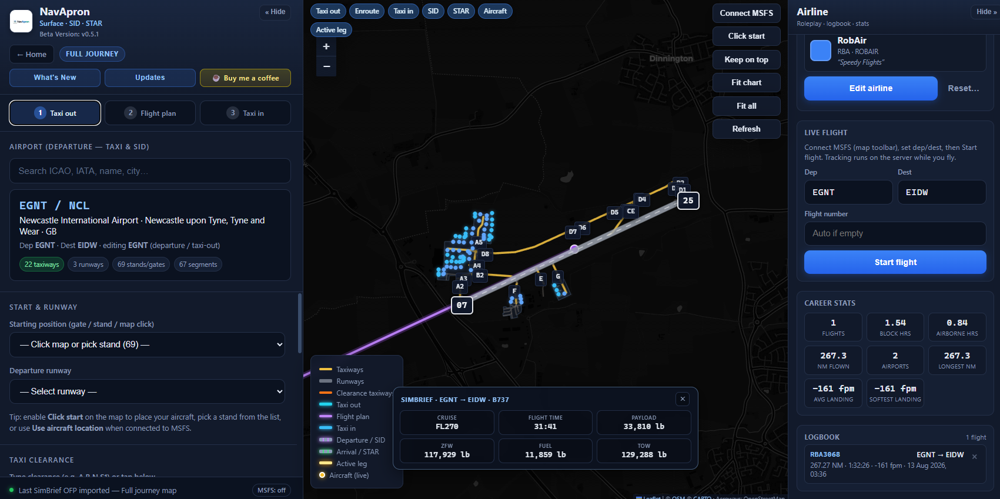
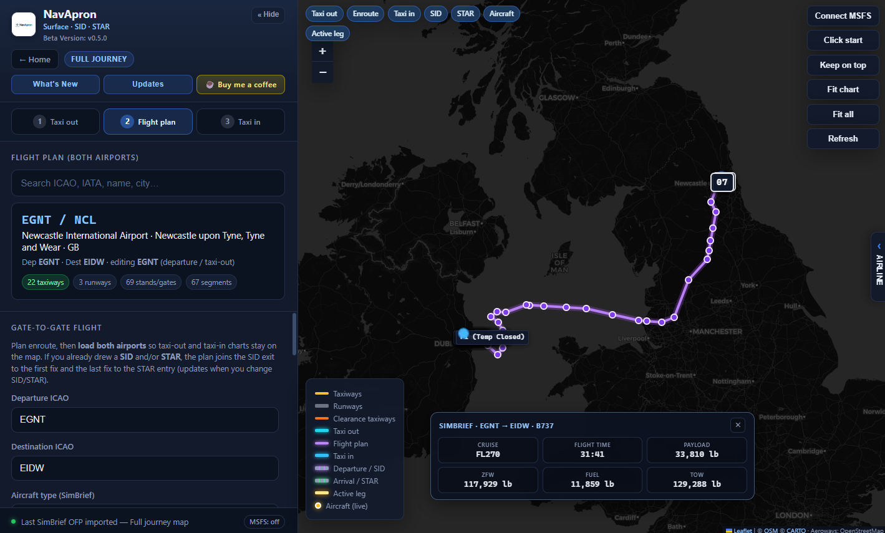
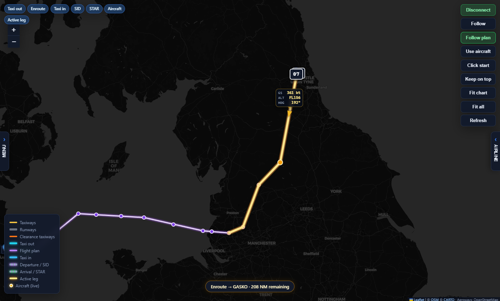
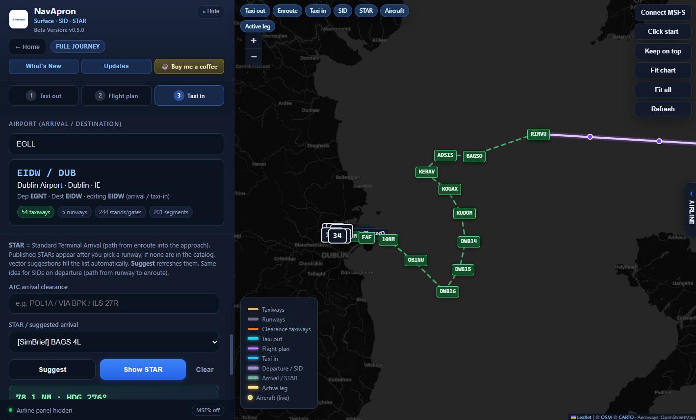
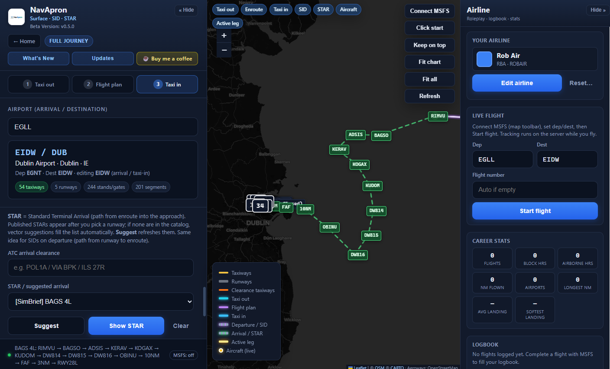

Create your airline
Name it, give it an ICAO and a callsign. Roleplay your own virtual airline right inside the app.
Taxi charts, SIDs & STARs, SimBrief routes, live aircraft and a full airline logbook — all on a second-monitor friendly map that stays with you from pushback to parking.
Taxi, enroute, SIDs/STARs, live tracking and the new airline logbook.






From the gate, through the SID, across the ocean, down the STAR and back to the stand — without ever leaving NavApron.
Name it, give it an ICAO and a callsign. Roleplay your own virtual airline right inside the app.
Hit Start flight and track the leg while you fly. Hours, distance and landings are logged automatically.
Flights, block hours, airborne hours, NM flown, airports visited, longest sector, average and softest landing.
Every completed flight is stored with route, distance, time and landing rate. Your history at a glance.
Plan the whole trip without wiping layers. Switch between Taxi out, Flight plan and Taxi in with one click.
See the current segment highlighted while you fly. Know exactly where you are on the plan.
Keep the map locked to your progress along the route so you never lose situational awareness.
Toggle taxi-out, enroute, taxi-in, SID, STAR and aircraft independently. Clean map, total control.
Taxiways, runways, aprons and gates from OpenStreetMap — sharp, zoomable and decluttered when you need it.
Build a clearance and get a path all the way to the true runway end. No more guessing at big hubs.
After landing, direction-aware routing from the runway back to the gate with early-exit suggestions.
Load both departure and destination so taxi-out and taxi-in charts stay on the map together.
Departure and arrival procedures drawn with the taxiways. One map from runway to runway.
Pull your latest operational flight plan and draw the whole route, with cruise, fuel and payload visible.
Open Dispatch with departure, destination and aircraft already filled in. One less step.
DCT and fixes via OurAirports navaids when you want to plan without leaving the app.
SimConnect puts your plane on the chart in real time with speed, altitude and heading.
Keep the map centred on you while you fly. Or use Follow plan to stay locked to the route.
Pin NavApron above everything so the chart never disappears behind the sim.
Own Windows window. Full-screen sim on the main display, charts on the second. Exactly how it should be.
Three steps from download to taxi clearance.
Grab the free Windows app from flightsim.to. Run it next to MSFS — no complicated install.
Search airports, build taxi routes, import SimBrief, add SIDs and STARs. Everything stays on one map.
Connect MSFS, start the flight, follow live. Hours, distance and landings go straight into your airline logbook.
Real feedback from the flightsim.to community.
“This is exactly what I’ve been looking for. Clean taxi charts, live aircraft on the map, and pathfinding that actually works at busy airports. Brilliant free tool.”
“Running it on my second monitor is perfect. Full journey mode + SimBrief import means I can plan the whole flight without switching apps. Keep up the great work!”
“SIDs and STARs on the same chart as the taxiways is a game changer. Local cache is fast and the interface is clean. Highly recommended.”
More reviews on flightsim.to
Free desktop companion for Microsoft Flight Simulator.
Windows · Runs in its own window
NavApron is free sim software and is safe to run. Some PCs show Windows SmartScreen or antivirus warnings because the app is not yet code-signed (common for indie desktop builds). This is a false positive, not a virus.
Only install from the official download. If Windows blocks it: More info → Run anyway. Optional: add an exclusion for the NavApron folder after you verify the source.
Join the Discord for updates, help and feedback — or support development here: